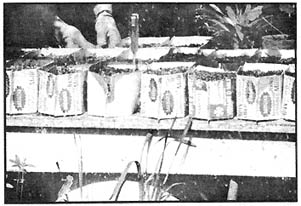

If the good earth farm came about through searching for a way of life. I was not content with what I had come to realize through my own ego-pursuits and certainly there was little glory to be found in the method and achievements of my society.
Maybe I was tired ~ tired of toiling and killing and of trying to live up to the expectations of others when, hell, I couldn't even live up to my own.
So I asked around a lot, but it always come back the same,"This
is a cruel world, boy, you've got to get out there and struggle and fight hard. "Well, I had got out there and struggled and fought hard, but it always came both pretty much the same ~ more struggling and more fighting.
But then I came upon a verse in the Bible, somewhere in Matthew, Jesus said: "Consider the lillies of the valley, how they grow; they toil not..."
Everything's been fine since. The earth is good, and we have a lot of fun."
From an article by ANN NUGENT
Originally published in NORTHWEST PASSAGE, Box 705, So Bellingham Station, Bellingham, Washington 90225/fortnightly/$6.00 a year.
Gene and Charlotte LeRoy have found a haven on Guemes Island in Washington state's Puget Sound. The dirt road leading into their property from the highway tunnels through woods and the first sign of their homestead is the four-acre orchard. Over to the left stretches three acres of pasture . . . the LeRoy's 75-year-old, two-story wood house is visable beyond that . . . and four sloping acres where the vegetables grow lie still further on. Woods completely surround the clearing.
The LeRoys own 16 acres and make their living farming organically. They sell vegetables to friends on the island, in the nearby mainland town of Anacortes and to the Kagetsu Restaurant in Seattle's University district. Their produce is good: demand exceeded supply last year and the LeRoys are increasing their cultivation this season.
To Gene and Charlotte, farming organically is a way of life and they've chosen to use their resources and ingenuity in a bold attempt to reclaim land that agronomists have labeled unsuitable for farming.
"Those governmental officials are always on a negative trip," Gene told us. "They're always good at telling you what NOT to do. They claimed that my soil is a glaciated type and, therefore, is too rocky and barren-compared to fertile river beds-to farm. That's a lot of bull."
The LeRoys prefer a more positive approach. They're quite pleased, for instance, that their land (no doubt partly due to those agronomists' warnings) has lain fallow for 30 years. That's good, they feel, because-as a result-the farm is almost entirely uncontaminated by the recent abusive use of pesticides, herbicides and commercial fertilizers.
Like all good organic farmers, Gene and Charlotte are more interested in building a good life than they are in making fast, easy profits. They regard working in the soil and growing seeds as a pleasure in itself and they don't mind adapting themselves to the peculiar conditions of their land. The LeRoys' four-acre vegetable patch slopes gently downhill, for instance, so they plow and plant the upper level while the lower section is still too wet to work. Later, the hot weather plants are seeded in the low land where they'll find moisture during the dry season.
Gene insists that proper seed selection is essential and he never buys seeds that come from the east or south. "I use only seeds that friends give me or that I get from Tillinghasts's Seed Co. in LaConner, Washington," he says.
"Tillinghast's seeds are produced locally and are better acclimated to my peculiar soil conditions and climate. Eventually I'll develop my own seeds and they should produce an even more satisfying crop."
Signs of Gene's experiments are obvious on the homestead. The thick sod in the apple orchard-neglected for 30 years-needed work so he's plowed the four acres and sowed cowpeas. The long, leguminous roots of the cowpeas will help loosen the soil and supply nitrogen to it; they'll also produce edible peas, make good forage for the goats and provide "green manure " for composting.
Hand-made cold frames rest near the house. The simple wooden box frames, about five feet by three feet, are topped by old windows and the frames protect tender cabbage, brussel sprout, broccoli, cauliflower and other seedlings from frost. In this way, the plants are given a headstart so they can be harvested before the summer heat.
Gene plans to make a hot bed soon with a $7.00 20-foot-long cable that he's bought. He'll lay the cable underground, start peppers and cucumbers over it and enclose it all in a frame topped by an old window of many panes. The steady heat will give the hot weather plants the push they need.
Gene is also building a new greenhouse and chicken coop over near the pasture where the five goats romp. He's dug an excavation in the shape of a cross approximately 50 feet by 50 feet and plans to put the structures on top of the site. The coop will house 100 chickens fed on organic grain shipped from California and its floor will be layered with hay. At regular intervals the manure-hay mixture will be shovelled through a trap door into compost heaps under the buildings. The heat generated from the composting should give adequate warmth to the greenhouse and chicken coop.
Making compost is nothing new for the LeRoys. They used to make tons of it when they lived in Blaine, Washington and they even sold it commercially there. Gene now uses the same techniques to produce humus in the same large quantities . . . but he plows it all into the fields of the LeRoy homestead.
Charlotte and Gene invited us into the house for a cup of tea before we left and we found their cozy living-kitchen to be a double room dominated by a large wood-burning cook stove. To the sides were a weaving loom, piano, re cord player and stacks of books . . . but the large table near one window caught our attention.
That table held a couple dozen half-gallon milk containers laid on their sides, split lengthwise and filled with soil. Imbedded in the cartons were many varieties of eggplant, grapefruit, water cress, sweet marjoram, savory, basil and other seeds. Several avacado seeds, suspended by toothpicks in bowls of water, sat nearby. "You can grow anything," Charlotte insisted. "When our greenhouse is built, we're going to try growing oranges, figs . . . everything."
We had heard of the difficulties of finding a good soil mix for starting seeds and we asked Charlotte what she used in the cartons on the table.
"A mixture of humus, sand and loam topped with a sprinkling of vermiculite," she told us. "I hike over to the woods and dig up rich leaf mold but it's apt to be too acid so I have to be careful and not use too much."
We mentioned that many commercial enterprises sterilize their potting soil to prevent damping off.
"You don't need to do that," she insisted. "It's unnecessary. Humus is light and spongy and, mixed with loam, it's an ideal medium. I've never had trouble with damping off."
A large wire drying rack suspended from the ceiling over the stove held a goatskin. At other times during the year, we were told, the rack is apt to be loaded with edibles such as orange peels, parsley and sliced apples.
The weaving in process on the loom contained various textures of weeds, mosses and spun fibres . . . and it was good to sit at a hand-made wood table sipping tea made of rose hips, catnip and peppermint . . . eating dried apples dipped in honey . . . and listening to Charlotte explain her recipe for goat's milk cheese.
Outside, it was a rare sunny day and it also felt good to walk around on the LeRoy's farm and play with their goats We were sorry to leave the tranquil retreat but we had to catch the ferry and Gene and Charlotte undoubtedly were eager to make the most of the lovely day by working in their fields.
"It's a lot of work . . . but never toil," Gene said. "What you need, though, is faith. Faith that whatever you attempt to do will work out OK."
|
 |
|
|